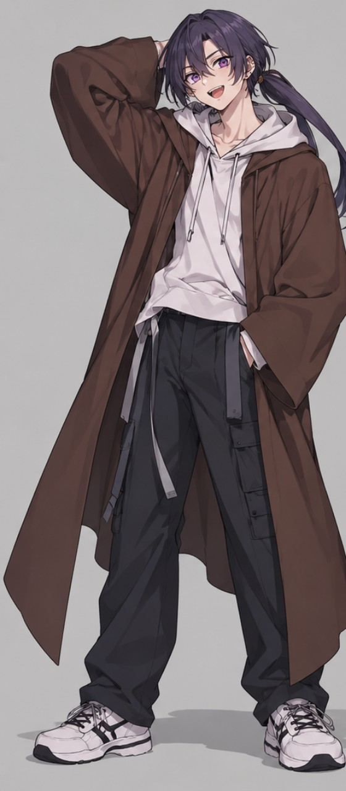
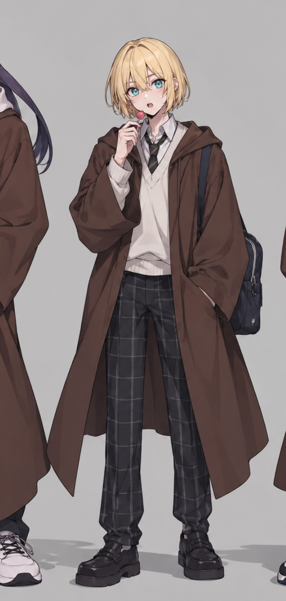

MAGICAL CURSE IMPERIAL NATIONAL HIGH SCHOOL
カス高
キャラクター名鑑
オリジナルストーリー「マジカルカース帝国国立高等学校」の主要キャラクター紹介サイト。茶色のローブをまとう一年生三人組から掲載中。

プラス 本名：プラス・ゼロ記憶のない転校生。夢は、学園の全員と友達になること。
FIRST YEAR / GRADE 1 / COSPLAY CIRCLE
ユージ 本名：盛岡友児プラスを案内する最初の友人。大声だけど弱気な常識人。
FIRST YEAR / GRADE 1 / OTAKU CIRCLE ランス
本名：ジェイル・アルムダイン
ランス
本名：ジェイル・アルムダイン
Grade 1に留まる決闘常連。星は全部ゆきめろちゃんへ。